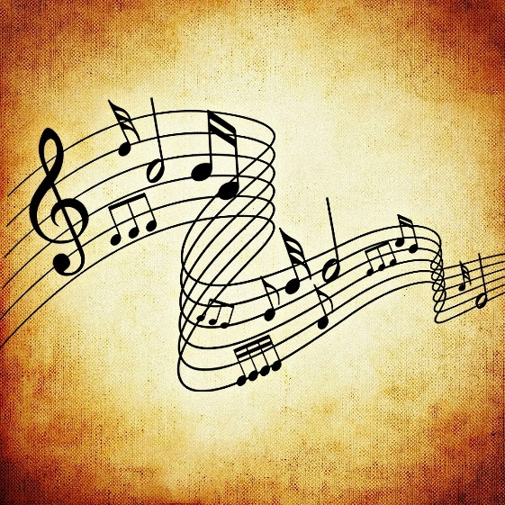
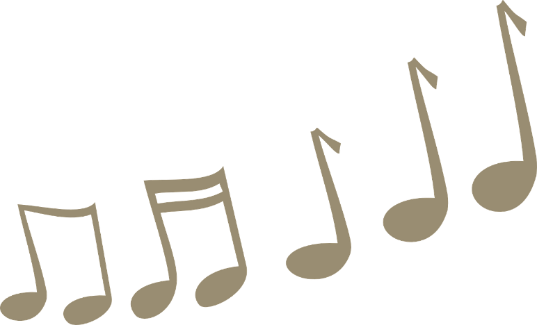

Basic Anatomy
A good song consists of a Melody and a Harmony. The Melody is the “main dish” in a song. It is often repeated, and it is usually made to be “catchy.” The Harmony is kind of like a “side dish.” The Harmony complements the Melody and allows for the song to have more texture.
Melody
There are a few factors to consider when writing a melody: the scale, pitch, rhythm, and phrasing. When writing a melody, it is important to know which scale or key signature the song will be written in. Each scale and key signature have a distinct sound to it. For example, the D major scale conveys a feeling of triumph, and the C minor scale evokes feelings of sadness.
Pitch
Higher pitch is associated with happiness, tension, or anxiety. Use higher pitch when composing a fast-paced song. Lower pitch is associated with calm or sad feelings. Lower pitch can also be used to express serious feelings.
Melody
Rhythm
Different rhythms add more flavor to a song. Use a variety of rhythms to keep the song interesting.

Phrasing
Phrasing is the direction the melody moves in. Static motion, descending motion, and ascending motion are different types of phrasing. There can be a mixture of phrases in a song.
Harmony
The harmony part of songs contains chords that support the melody. There are a few types of chords: the tonic chord, the dominant chord, and the subdominant chord. The tonic chord is the basic chord that includes the root, third, and fifth notes of the scale. It often serves as the starting and ending note of compositions. The dominant chord focuses on the fifth degree of the scales. This chord creates a sense of suspension, and it usually waits for the tonic cord to finish it off. The subdominant chord is built on the fourth degree of the scale. This chord adds a sense of progression to a composition.